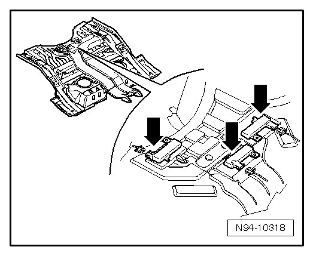
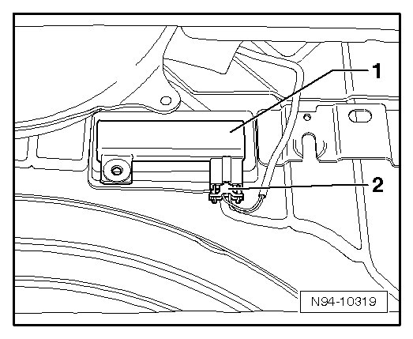

Trunk / Liftgate: Description and Operation
Access/Start Authorization Antennas and Sensors
Luggage Compartment Access/Start Authorization Antenna
Depending on equipment, Luggage Compartment Access/Start Authorization Antenna (R137) - arrows - is located at three different positions in luggage compartment.

• No coding, basic setting or adaptation is necessary if Luggage Compartment Access/Start Authorization Antenna (R137) is replaced.
Removing
- Switch off ignition, switch off all electrical consumers and remove ignition key.
- Remove storage area floor of luggage compartment from vehicle.
- Disconnect connector - 2 -.

- Loosen the glued Luggage Compartment Access/Start Authorization Antenna (R137) - 1 - from luggage compartment floor.
Installing
Install in reverse order of removal.